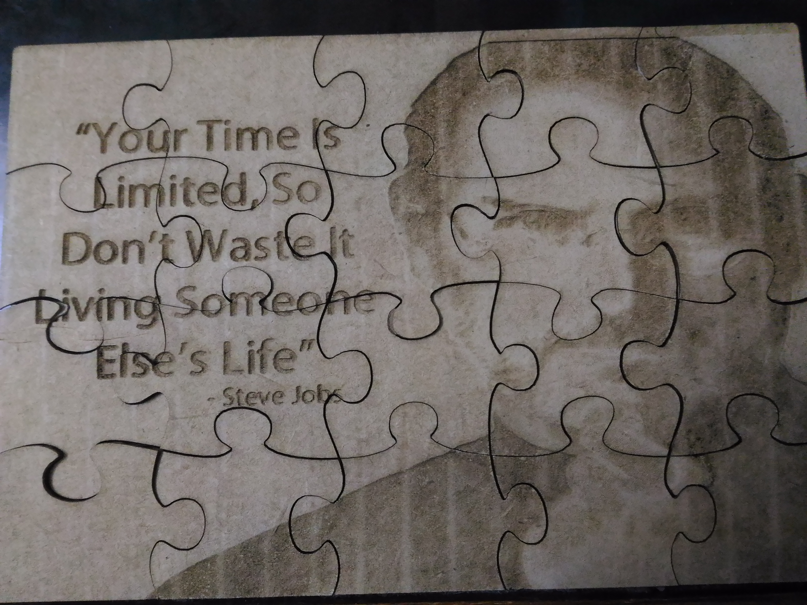
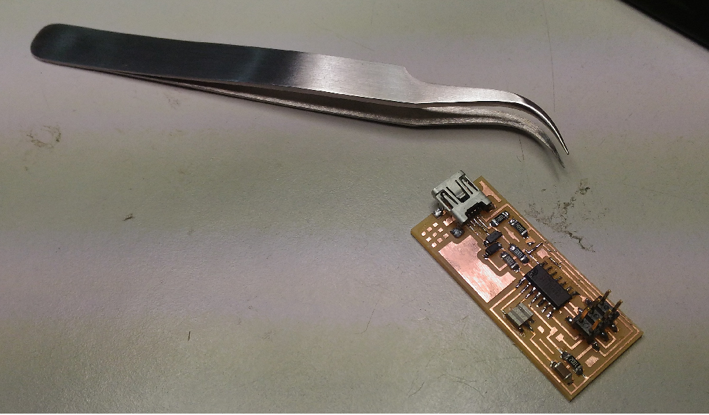

Everyone seemed really excited when Mr Francisco Sanchez, our trainer for the Pre Fab Academy started the class by giving the classical examples of What Digital Fabrication is all about. Important references were made to The Mathematical Theory of Communication and The Third Industrial Revolution, an article published in The Economist. Francisco then introduced himselves, and told his journey from being a Civil Engineering and how he got interest in Fab Academy. He then explained the projects that he did in his fab lab, The Beach Lab and the 9 principles of MIT Media Labs.....

Getting acquainted with the Machines And from today onwards everything is on Ubuntu!!! Day 5: The Vinyl Cutter The Vinyl Cutter that our fablab has is Roland GX-24 , CAMM-1 SERVO vinyl cutter 2" - 27.5"5.08cm - 69.85cm 20 IPS 30gf - 250gf. Vinyl Cutter A vinyl cutter is a type of computer controlled machine. Small vinyl cutters look like computer printers. The computer controls the movement of a sharp blade. This blade is used to cut out shapes and letters from sheets of thin self-adhesive plastic (vinyl)........

The Electronics and Programming Is one of the core part in the fab academy programme and through the pre fab academy our trainers are trying to introduce us to the basics. Being a Civil Engineer Francisco told us how he started learning electronics and how he mastered it. It was really an inspiration for me as I had the fear of whether I would be able to catch up with others. If I quote Francisco

Necessity is the mother of Innovations Luciano started the day by explaining on what designing thinking is all about. It involves cycle of activities Ask Imagine Plan Create Improve. Here desiging is made based on a problem identified and is purely based for a particular situation and ma not be applicable to the masses. Luciano made a demonstration of the Brainstroming activity for us. The session began with listing out what are the things that are not available in the fablab. So we all shouted items one by one. He started listing it down in the white board. He then took the problems one by one made us think how to solve the problem .